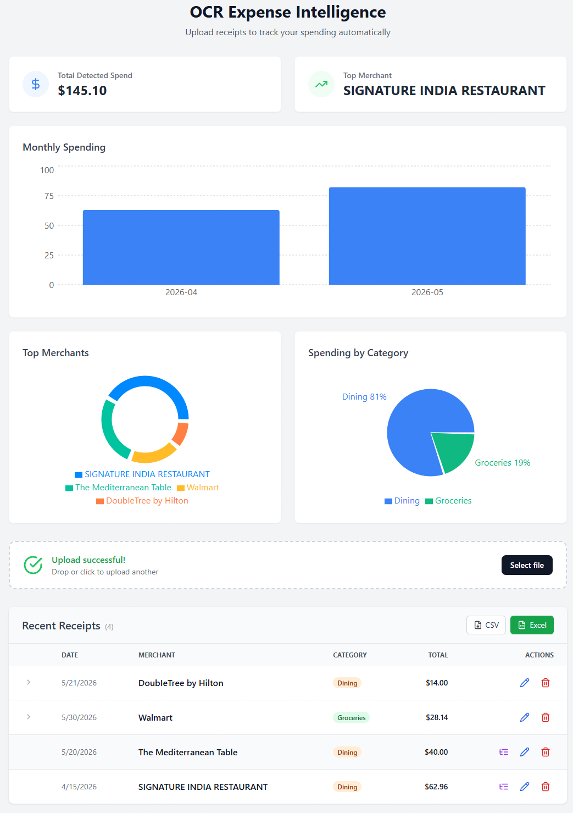

Receipts in.
Structured spend out.
A FARM-stack SaaS that reads receipt photos and PDFs with AI-powered OCR — extracting merchant, date, total, currency and line items, normalizing vendors, categorizing spend, and surfacing it all on an analytics dashboard.
Receipts are unstructured, and that's expensive.
Photos, crumpled paper, PDFs, four spellings of the same store. Manual entry is slow and error-prone; spend insight arrives too late to matter.
Capture anything
Drop a JPG, PNG, or PDF. The API validates, stores, and hands off — it never blocks on OCR.
Understand it
OCR + parsing pulls merchant, date, total, currency and per-item lines, each with a confidence score.
Make it useful
Vendor normalization, categorization, and analytics turn raw scans into decisions.
One screen, the whole spend story.

Detected-spend stats, a monthly trend, Top Merchants and Spending by Category pie charts, and a full-width receipts table with inline edit, itemized bills, and CSV / Excel export.
An async pipeline, end to end.
The API authenticates, validates, stores and enqueues in milliseconds. A Celery worker does the heavy lifting off the request path; the UI polls a job until it completes.
JPG · PNG · PDF
analytics
edit · export
receipts · analytics · vendors · admin · health
broker
poppler
OpenCV
EasyOCR
RapidFuzz
Six steps, fully traced.
Ingest
Image or PDF saved to a tenant-namespaced, traversal-safe path.
Pre-process
OpenCV deskew, denoise, contrast for legibility.
OCR
EasyOCR text + boxes; PDFs rasterized via poppler.
Parse
Merchant, date, total, currency, line items + confidence.
Normalize
Fuzzy-match vendor; categorize; flag low confidence.
Persist
Receipt + line_items stored; job marked complete.
Every job records processing_ms, pages, confidence and model_used for observability.
Shipped capabilities.
AI extraction
Merchant, date, total, currency & confidence from JPG/PNG/PDF, aligning the TOTAL label to its price.
Pre-processing
OpenCV deskew / denoise / contrast lifts accuracy on real-world photos and scans.
Itemized bills
Line items fanned into their own collection, shown most-expensive-first.
Vendor normalization
RapidFuzz collapses "WALMART #4821" / "Wal-Mart" into one canonical vendor; unknowns queued for review.
Analytics
Monthly-spend bar chart, plus Top-Merchant and Spending-by-Category pie charts, vendor and extraction-failure views.
CSV / Excel export
Export the receipts table to CSV or a real styled Excel file, straight from the browser — no dependency.
Auth & tenancy
SHA-256 hashed API keys resolve a tenant; per-tenant rate limiting; consistent error shape.
Async & observable
Instant job_id + polling, health/readiness probes, and one-command Docker Compose stack.
8 of 10 priorities delivered.
The stack.
API
- FastAPI
- Uvicorn
- Motor (async)
- slowapi
- RapidFuzz
Worker / ML
- Celery + Redis
- EasyOCR
- PyTorch (CPU)
- OpenCV
- pdf2image · poppler
Data & Web
- MongoDB
- React + Vite
- TailwindCSS
- Recharts
- Axios
Platform
- Docker Compose
- GitHub Actions CI
- Mongo-Express
- Pytest suite
- 12-factor config
Tested, contained, observable.
Automated tests
Unit + API + isolated mechanism tests, mongomock / fakeredis backed — no Docker needed. CI runs them on every push.
Tenant-isolated stores
- receipts · parsed docs
- jobs · async status
- line_items · analytics grain
- tenants · hashed keys
- vendors · canonical names
Safe by default
- SSRF / path-traversal guards
- SHA-256 key hashing
- rate limits per tenant
- generic error bodies
- /health/ready probes
From MVP to platform.
/v1 versioning
Stable, versioned contract before public clients depend on response shapes.
S3 / MinIO storage
Move uploads off local volumes to object storage for horizontal scale.
GPU VLM & schemas
Custom extraction schemas, webhooks, and VLM inference for enterprise documents.